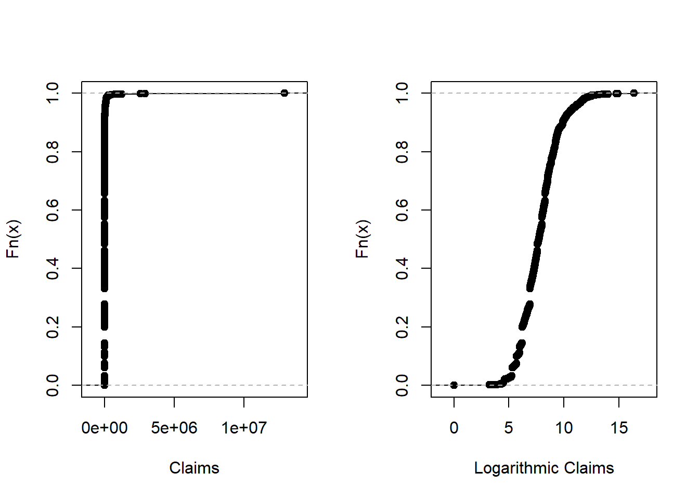

- 1 Introduction to Loss Data Analytics
- 2 Frequency Distributions
- 3 Modeling Loss Severities
- 4 Model Selection
- 5 Simulation
- 6 Collective Risk Model: without coverage modifications
- 7 Applications
- 8 Tweedie distribution
- 9 Empirical Bootstrap
- 10 Parametric Bootstrap
- 11 Getting the Data
- 12 Fit Frequency Models
- 13 Fit Severity Models
3.9 Nonparametric Inference
This file contains illustrative R code for computing important count distributions. When reviewing this code, you should open an R session, copy-and-paste the code, and see it perform. Then, you will be able to change parameters, look up commands, and so forth, as you go. This code uses the dataset CLAIMLEVEL.csv
3.9.1 Nonparametric Estimation Tools
This section illustrates non-parametric tools including moment estimators, empirical distribution function, quantiles and density estimators.
3.9.1.1 Moment estimators
The \(kth\) moment \(EX^k\) is estimated by \(\frac{1}{n}\sum_{i=1}^{n}X_i^k\). When \(k=1\) then the estimator is called the sample mean.The central moment is defined as \(E(X-\mu)^k\). When \(k=2\), then the central moment is called variance. Below illustrates the mean and variance.
# Start with a simple example of ten points
(xExample = c(10,rep(15,3),20,rep(23,4),30)) [1] 10 15 15 15 20 23 23 23 23 30##summary
summary(xExample) # mean Min. 1st Qu. Median Mean 3rd Qu. Max.
10.0 15.0 21.5 19.7 23.0 30.0 sd(xExample)^2 # variance [1] 34.455563.9.1.2 Empirical Distribution function
The graph below gives the empirical distribution function xExample dataset.
PercentilesxExample <- ecdf(xExample)
###Empirical Distribution Function
plot(PercentilesxExample, main="",xlab="x")
3.9.1.3 Quantiles
The results below gives the quantiles.
##quantiles
quantile(xExample) 0% 25% 50% 75% 100%
10.0 15.0 21.5 23.0 30.0 #quantiles : set you own probabilities
quantile(xExample, probs = seq(0, 1, 0.333333)) 0% 33.3333% 66.6666% 99.9999%
10.00000 15.00000 23.00000 29.99994 #help(quantile)3.9.1.4 Density Estimators
The results below gives the density plots using the uniform kernel and triangular kernel.
##density plot
plot(density(xExample), main="", xlab="x")
plot(density(xExample, bw=.33), main="", xlab="x") # Change the bandwidth
plot(density(xExample, kernel = "triangular"), main="", xlab="x") # Change the kernel
3.9.2 Property Fund Data
This section employs non-parametric estimation tools for model selection for the claims data of the Property Fund.
3.9.2.1 Empirical distribution function of Property fund
The results below gives the empirical distribution function of the claims and claims in logarithmic units.
ClaimLev <- read.csv("DATA/CLAIMLEVEL.csv", header=TRUE); nrow(ClaimLev); # 6258[1] 6258ClaimData<-subset(ClaimLev,Year==2010); #2010 subset
##Empirical distribution function of Property fund
par(mfrow=c(1, 2))
Percentiles <- ecdf(ClaimData$Claim)
LogPercentiles <- ecdf(log(ClaimData$Claim))
plot(Percentiles, main="", xlab="Claims")
plot(LogPercentiles, main="", xlab="Logarithmic Claims")
3.9.2.2 Density Comparison
shows a histogram (with shaded gray rectangles) of logarithmic property claims from 2010. The blue thick curve represents a Gaussian kernel density where the bandwidth was selected automatically using an ad hoc rule based on the sample size and volatility of the data.
#Density Comparison
hist(log(ClaimData$Claim), main="", ylim=c(0,.35),xlab="Log Expenditures", freq=FALSE, col="lightgray")
lines(density(log(ClaimData$Claim)), col="blue",lwd=2.5)
lines(density(log(ClaimData$Claim), bw=1), col="green")
lines(density(log(ClaimData$Claim), bw=.1), col="red", lty=3)
density(log(ClaimData$Claim))$bw ##default bandwidth[1] 0.32559083.9.3 Nonparametric Estimation Tools For Model Selection
3.9.3.1 Fit Distributions To The Claims Data
The results below fits Gamma and Pareto distribution to the claims data
library(MASS)
library(VGAM)
# Inference assuming a gamma distribution
fit.gamma2 <- glm(Claim~1, data=ClaimData,family=Gamma(link=log))
summary(fit.gamma2, dispersion = gamma.dispersion(fit.gamma2))
Call:
glm(formula = Claim ~ 1, family = Gamma(link = log), data = ClaimData)
Deviance Residuals:
Min 1Q Median 3Q Max
-4.287 -2.258 -1.764 -1.178 30.926
Coefficients:
Estimate Std. Error z value Pr(>|z|)
(Intercept) 10.18952 0.04999 203.8 <2e-16 ***
---
Signif. codes: 0 '***' 0.001 '**' 0.01 '*' 0.05 '.' 0.1 ' ' 1
(Dispersion parameter for Gamma family taken to be 3.441204)
Null deviance: 6569.1 on 1376 degrees of freedom
Residual deviance: 6569.1 on 1376 degrees of freedom
AIC: 28414
Number of Fisher Scoring iterations: 14(theta<-exp(coef(fit.gamma2))*gamma.dispersion(fit.gamma2)) #mu=theta/alpha(Intercept)
91613.78 (alpha<-1/gamma.dispersion(fit.gamma2) )[1] 0.2905959# Inference assuming a Pareto Distribution
fit.pareto <- vglm(Claim ~ 1, paretoII, loc=0, data = ClaimData)
summary(fit.pareto)
Call:
vglm(formula = Claim ~ 1, family = paretoII, data = ClaimData,
loc = 0)
Pearson residuals:
Min 1Q Median 3Q Max
loge(scale) -6.332 -0.8289 0.1875 0.8832 1.174
loge(shape) -10.638 0.0946 0.4047 0.4842 0.513
Coefficients:
Estimate Std. Error z value Pr(>|z|)
(Intercept):1 7.7329210 0.0933332 82.853 <2e-16 ***
(Intercept):2 -0.0008753 0.0538642 -0.016 0.987
---
Signif. codes: 0 '***' 0.001 '**' 0.01 '*' 0.05 '.' 0.1 ' ' 1
Number of linear predictors: 2
Names of linear predictors: loge(scale), loge(shape)
Log-likelihood: -13404.64 on 2752 degrees of freedom
Number of iterations: 5
No Hauck-Donner effect found in any of the estimateshead(fitted(fit.pareto)) [,1]
[1,] 2285.03
[2,] 2285.03
[3,] 2285.03
[4,] 2285.03
[5,] 2285.03
[6,] 2285.03exp(coef(fit.pareto))(Intercept):1 (Intercept):2
2282.2590626 0.9991251 3.9.3.2 Graphical Comparison of Distributions
The graphs below reinforces the technique of overlaying graphs for comparison purposes using both the distribution function and density function. Pareto distribution provides a better fit.
# Plotting the fit using densities (on a logarithmic scale)
# None of these distributions is doing a great job....
x <- seq(0,15,by=0.01)
par(mfrow=c(1, 2))
LogPercentiles <- ecdf(log(ClaimData$Claim))
plot(LogPercentiles, main="", xlab="Claims", cex=0.4)
Fgamma_ex = pgamma(exp(x), shape = alpha, scale=theta)
lines(x,Fgamma_ex,col="blue")
Fpareto_ex = pparetoII(exp(x),loc=0,shape = exp(coef(fit.pareto)[2]), scale = exp(coef(fit.pareto)[1]))
lines(x,Fpareto_ex,col="purple")
legend("bottomright", c("log(claims)", "Gamma","Pareto"), lty=1, cex=0.6,col = c("black","blue","purple"))
plot(density(log(ClaimData$Claim)) ,main="", xlab="Log Expenditures")
fgamma_ex = dgamma(exp(x), shape = alpha, scale=theta)*exp(x)
lines(x,fgamma_ex,col="blue")
fpareto_ex = dparetoII(exp(x),loc=0,shape = exp(coef(fit.pareto)[2]), scale = exp(coef(fit.pareto)[1]))*exp(x)
lines(x,fpareto_ex,col="purple")
legend("topright", c("log(claims)", "Gamma","Pareto"), lty=1, cex=0.6,col = c("black","blue","purple"))
3.9.3.3 P-P plots
shows \(pp\) plots for the Property Fund data; the fitted gamma is on the left and the fitted Pareto is on the right. Pareto distribution provides a better fit again
# PP Plot
par(mfrow=c(1, 2))
Fgamma_ex = pgamma(ClaimData$Claim, shape = alpha, scale=theta)
plot(Percentiles(ClaimData$Claim),Fgamma_ex, xlab="Empirical DF", ylab="Gamma DF",cex=0.4)
abline(0,1)
Fpareto_ex = pparetoII(ClaimData$Claim,loc=0,shape = exp(coef(fit.pareto)[2]), scale = exp(coef(fit.pareto)[1]))
plot(Percentiles(ClaimData$Claim),Fpareto_ex, xlab="Empirical DF", ylab="Pareto DF",cex=0.4)
abline(0,1)
#dev.off()3.9.3.4 q-q plots
In the graphs below the quantiles are plotted on the original scale in the left-hand panels, on the log scale in the right-hand panel, to allow the analyst to see where a fitted distribution is deficient
##q-q plot
par(mfrow=c(2, 2))
xseq = seq(0.0001, 0.9999, by=1/length(ClaimData$Claim))
empquant = quantile(ClaimData$Claim, xseq)
Gammaquant = qgamma(xseq, shape = alpha, scale=theta)
plot(empquant, Gammaquant, xlab="Empirical Quantile", ylab="Gamma Quantile")
abline(0,1)
plot(log(empquant), log(Gammaquant), xlab="Log Emp Quantile", ylab="Log Gamma Quantile")
abline(0,1)
Paretoquant = qparetoII(xseq,loc=0,shape = exp(coef(fit.pareto)[2]), scale = exp(coef(fit.pareto)[1]))
plot(empquant, Paretoquant, xlab="Empirical Quantile", ylab="Pareto Quantile")
abline(0,1)
plot(log(empquant), log(Paretoquant), xlab="Log Emp Quantile", ylab="Log Pareto Quantile")
abline(0,1)
3.9.3.5 Goodness of Fit Statistics
For reporting results, it can be effective to supplement graphical displays with selected statistics that summarize model goodness of fit. The results below provides three commonly used goodness of fit statistics.
library(goftest )
#Kolmogorov-Smirnov # the test statistic is "D"
ks.test(ClaimData$Claim, "pgamma", shape = alpha, scale=theta)
One-sample Kolmogorov-Smirnov test
data: ClaimData$Claim
D = 0.26387, p-value < 2.2e-16
alternative hypothesis: two-sidedks.test(ClaimData$Claim, "pparetoII",loc=0,shape = exp(coef(fit.pareto)[2]), scale = exp(coef(fit.pareto)[1]))
One-sample Kolmogorov-Smirnov test
data: ClaimData$Claim
D = 0.047824, p-value = 0.003677
alternative hypothesis: two-sided#Cramer-von Mises # the test statistic is "omega2"
cvm.test(ClaimData$Claim, "pgamma", shape = alpha, scale=theta)
Cramer-von Mises test of goodness-of-fit
Null hypothesis: Gamma distribution
with parameters shape = 0.290595934110839, scale =
91613.779421033
data: ClaimData$Claim
omega2 = 33.378, p-value = 2.549e-05cvm.test(ClaimData$Claim, "pparetoII",loc=0,shape = exp(coef(fit.pareto)[2]), scale = exp(coef(fit.pareto)[1]))
Cramer-von Mises test of goodness-of-fit
Null hypothesis: distribution 'pparetoII'
with parameters shape = 0.999125131378519, scale =
2282.25906257586
data: ClaimData$Claim
omega2 = 0.38437, p-value = 0.07947#Anderson-Darling # the test statistic is "An"
ad.test(ClaimData$Claim, "pgamma", shape = alpha, scale=theta)
Anderson-Darling test of goodness-of-fit
Null hypothesis: Gamma distribution
with parameters shape = 0.290595934110839, scale =
91613.779421033
data: ClaimData$Claim
An = Inf, p-value = 4.357e-07ad.test(ClaimData$Claim, "pparetoII",loc=0,shape = exp(coef(fit.pareto)[2]), scale = exp(coef(fit.pareto)[1]))
Anderson-Darling test of goodness-of-fit
Null hypothesis: distribution 'pparetoII'
with parameters shape = 0.999125131378519, scale =
2282.25906257586
data: ClaimData$Claim
An = 4.1264, p-value = 0.007567